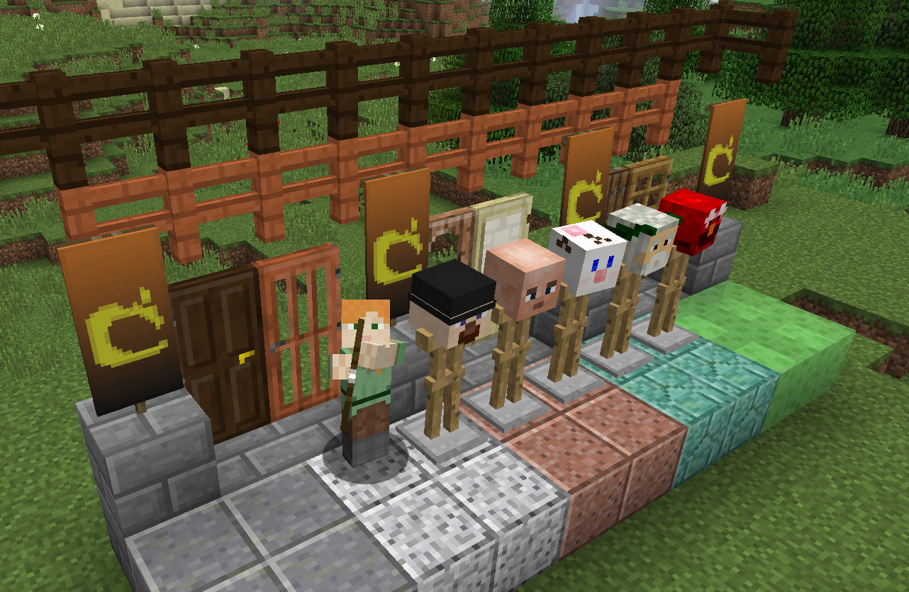
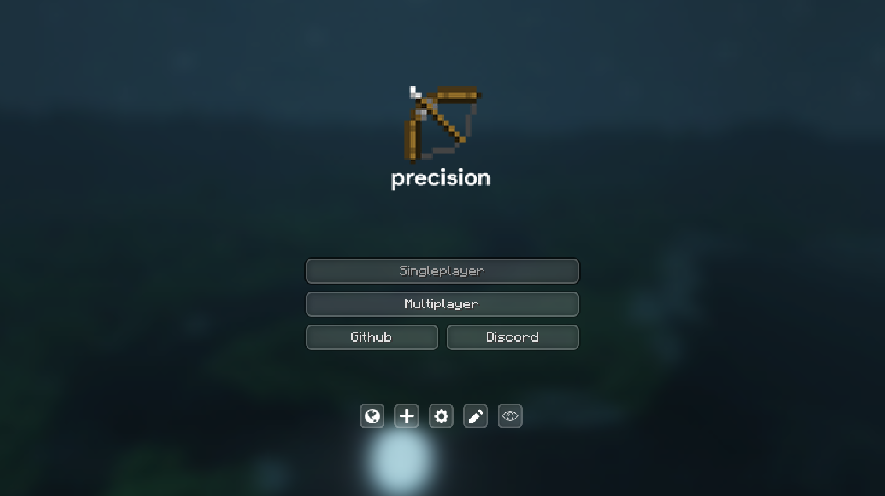

1.8
1.8, the first release of the Bountiful Update, is a major update to Minecraft. It added and changed many aspects of Minecraft. Among many things, the update made it easier for map makers to create adventure maps, while using the newly added Spectator mode. It added many blocks, mobs, and a structure for Survival play. Many commands were added or extended, the world boundary became a customizable component, many Survival mechanics were changed, and the update gave way for many more world customization options.

precision Client
precision Client is a modification of 1.5.2, to add extra nice features, such as fullbright, texture packs, and more.